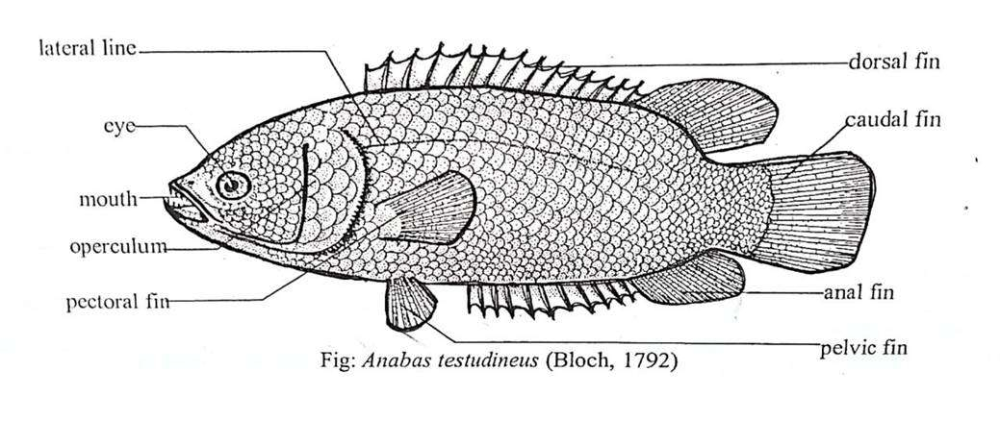

Practical on Anabas testudineus (Climbing Perch)
Introduction
Anabas testudineus, commonly known as Climbing Perch, is a freshwater fish known for its ability to survive in low-oxygen environments and even move on land using its pectoral fins. It is economically important in fisheries.
Scientific Classification
- Kingdom: Animalia
- Phylum: Chordata
- Class: Actinopterygii
- Order: Perciformes
- Family: Anabantidae
- Genus: Anabas
- Species: Anabas testudineus
Morphology
- Body: Deep, laterally compressed, covered with rough ctenoid scales.
- Head & Mouth: Broad head, upward-facing mouth.
- Fins: Long dorsal and anal fins with strong spines.
- Color: Greenish to brownish.
Habitat & Distribution
- Found in ponds, swamps, lakes, and slow rivers in South & Southeast Asia.
- Can survive in low oxygen levels using the labyrinth organ.
Unique Adaptations
- Labyrinth Organ: Extracts oxygen from air.
- Land Movement: Moves using pectoral fins and opercular spines.
- Drought Resistance: Can survive in dry conditions by burrowing.
Feeding Habits
Omnivorous, feeds on small fish, crustaceans, insects, and plant matter.
Reproduction
- Breeding: Oviparous, breeds in the monsoon season.
- Egg Hatching: Takes 24-36 hours, no parental care.
Economic Importance
- Aquaculture: Hardy fish with high market demand.
- Food: Rich in proteins and omega-3 fatty acids.
- Pest Control: Eats insect larvae and small aquatic pests.
Threats & Conservation
- Threats: Overfishing, habitat destruction, pollution.
- Conservation Measures: Regulated fishing, habitat restoration, hatchery breeding.
Diagram

Fig: External structure of Anabas testudineus
Conclusion
*Anabas testudineus* is an ecologically and economically valuable fish with unique survival abilities, making it important for sustainable fisheries and conservation.